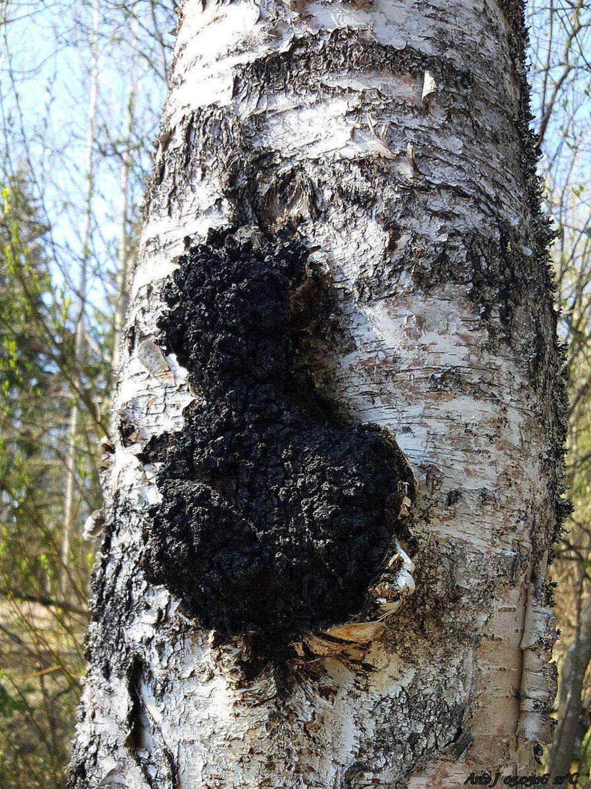
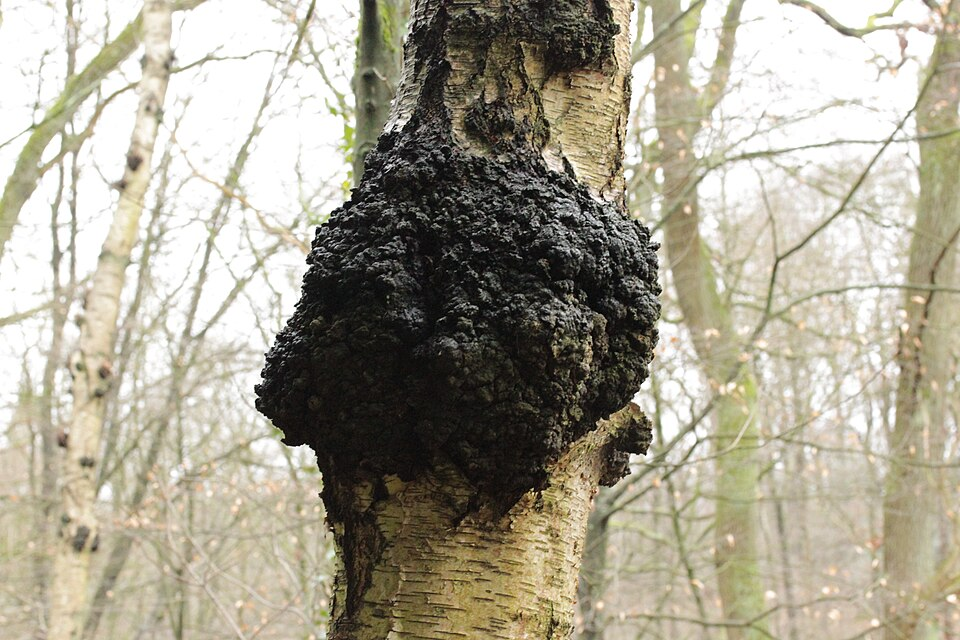

Chaga
Inonotus obliquus


- Also called
- Inonotus obliquus
- Kind
- mushroom · Hymenochaetaceae
- Legal status
- No Vermont law or rule about collecting or protecting this mushroom was found in the sources read; the sources read do not cover Vermont foraging rules. Ask Vermont Fish & Wildlife or the county forester before collecting on public land. (checked 2026-11-09)
Names
Chaga, Inonotus obliquus. Family Hymenochaetaceae.
A black, crusty, charcoal-like lump on birch trunks. It is not the mushroom proper but a hard mass of the fungus (a sclerotium); the true fruiting body forms under the bark after the tree dies.
Range and habitat
Parasitic on paper birch, yellow birch and other birches (also alder); after the tree dies it lives on the dead wood, causing a white rot; widely distributed in northern North America (MushroomExpert.com, Kuo, July 2020).
How to identify
- The lump is black, hard and charcoal-like, in cubes up to 30 cm across, bursting through the bark and sticking out 2 to 5 cm, often concave.
- Broken open, the flesh is orange-brown, tough and woody; KOH turns it black.
- The fruiting stage appears under the bark only after the host dies (not described in detail on the page).
Look-alikes
- Look-alikes are not stated on the page.
Through the year
Found year-round, but growing in summer and fall (MushroomExpert.com).
What the sources say about eating and poison
Not a food. MushroomExpert.com gives no edibility information and says chaga is not going to cure cancer; the health benefits reported come from the exercise of hunting for it. A Hymenochaetaceae stub on Wikipedia says members of this family cause heart rot, canker and root diseases of trees.
Never eat a wild mushroom because of anything on this page. See Mushrooms in Vermont Woods and call a poison center (1-800-222-1222) if someone has eaten one.
What helps it thrive
It needs living birch. It weakens the tree it grows on, and the page says the fungus then lives on the dead wood.
Sources
- MushroomExpert.com, Inonotus obliquus (Kuo, July 2020): https://www.mushroomexpert.com/inonotus_obliquus.html
- Wikipedia, Hymenochaetaceae: https://en.wikipedia.org/wiki/Hymenochaetaceae
What this page is based on
Kind of source: mixed: MushroomExpert.com (Michael Kuo, a North American field-guide site), Wikipedia and agency pages; read through a fetch tool, some in part
What was read: MushroomExpert.com page for Inonotus obliquus and Wikipedia's Hymenochaetaceae stub (both read 2026-11-09). Nothing specific to Vermont. Where a source says "not stated" this note says so.
Last checked: 2026-11-09
Vermont Woodland Owner's Reference, built 2026-11-09. Rules and dates here are summaries, not legal advice; dates shift with elevation and year. Photo and recording credits · The text is by Loop Works, CC BY 4.0 (pictures and recordings keep their own licenses) · Note: _reference/US-VT/Species/Chaga.md